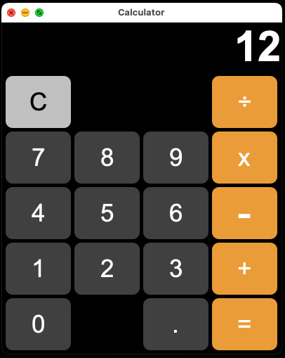
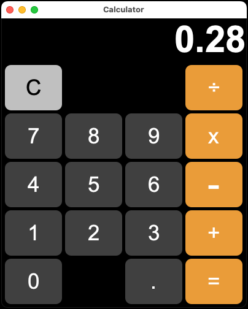

Java Calculator App
The Calculator App is a user-friendly utility tool to perform quick arithmetic calculations.
Utilziing the Java Swing GUI toolkit, it offers a simple interface. Internally,
the application maintains clean code through the SOLID principles and Clean Architecture, enhancing readability and maintainability.
It incorporates a structured Grid Layout for button organization and the AWT library for managing user-triggered events,
while also Utilziing object oriented programming principles.

